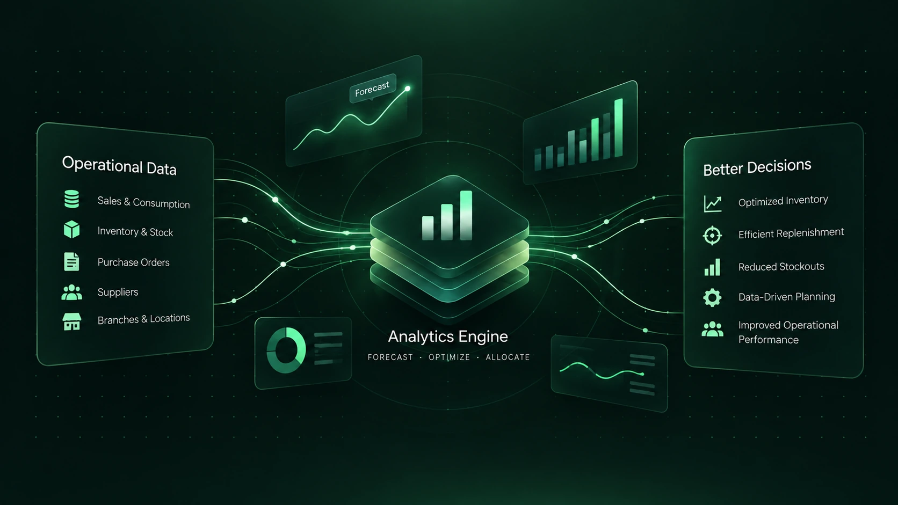

Data analytics
Statistical analysis, exploration and trends that support business decisions.
- Performance analysis
- Forecasting & trend analysis
- Data exploration & decision support
DUBAI, UNITED ARAB EMIRATES
Building analytics products that transform complex operational data into reliable insights, automated workflows, and better business decisions.
Data Analytics · Business Intelligence
Analytics Engineering · Automation

Cross-domain knowledge
+Data & analytics
+Business decisions
01 / THE INTERSECTION
Technical analytics capability. Practical business understanding.
My progression from a foundation in pharmacy operations to demand planning, data analytics and BI / analytics engineering connects business understanding with technical delivery. My experience spans healthcare, supply chain, retail / pharmacy and e-commerce.
Today, I develop dashboards, planning portals and automated reporting that connect financial, operational and supply-chain data. My approach combines domain knowledge with Python, SQL, Power BI and a continuing education in computer science.
CORE CAPABILITIES
Statistical analysis, exploration and trends that support business decisions.
Reliable reporting that brings performance into focus.
Validated data foundations for dependable analysis.
Analytics applications that connect insight with everyday work.
CROSS-DOMAIN KNOWLEDGE
Healthcare
Retail & pharmacy
E-commerce
02 / SELECTED WORK
Real applications. Synthetic data.
Explore the case study, then launch the application.
LIVE · INTERACTIVE APPLICATION
Bringing consumption, inventory, purchasing and forecasts together to support replenishment decisions and stock-risk monitoring.
Interactive portfolio demo using fully synthetic data.
Interactive application · Deployment pending
A Flask workflow application connecting purchase requests, purchaser assignment and purchase-order status tracking.
Interactive application · Deployment pending
Comparing agreements, bonuses and credit notes with receiving activity to support exception review and supplier analytics.
Architecture / Technical Case Study
A sanitized architecture reference for multi-source extraction and consolidation supporting cost-of-goods-sold analytics.
One live interactive application. Two applications awaiting public deployment. One COGS technical case study.
03 / EXPERIENCE
Bait Al Batterjee Hospitals Management L.L.C. (Saudi German Health)
Lead healthcare planning, reporting and business analytics. Develop executive Power BI dashboards, centralized demand-planning tools and Python reporting workflows, with data-quality controls and financial reconciliation.
Digital Business Systems (DBS)- outsourced to DMSCO.
Delivered e-commerce and commercial analytics, forecasting and loyalty-program reporting. Automated extraction, cleaning, validation and Excel reporting using Python, SQL, Pandas and SQLAlchemy.
El-Ezaby Chain Pharmacies
Developed inventory forecasting models using ARIMA, SARIMA, SARIMAX and Prophet. Built Power BI dashboards and automated reports to support replenishment, stock optimization and planning performance.
04 / TOOLKIT
Technology with a purpose.
Selected capabilities from my professional work.
05 / FOUNDATIONS
COMPUTER SCIENCE
University of the People
COMPUTER SCIENCE
University of the People
HEALTHCARE
Faculty of Pharmacy, Cairo university
06 / LET’S CONNECT
Let’s talk about data analytics, business intelligence
and the systems that support them.